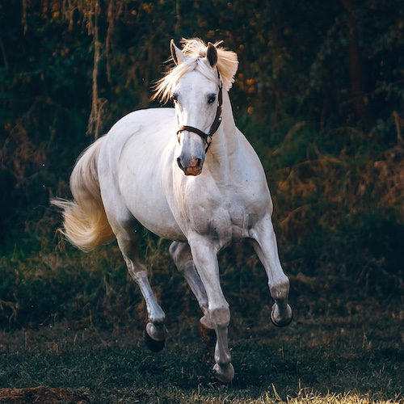
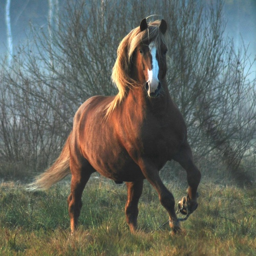

Horses are powerful and graceful animals that have been domesticated for thousands of years. They have served humans in transportation, agriculture, and warfare, showcasing their endurance and intelligence.

Wild horses, such as the Mustangs in North America, continue to roam freely and symbolize strength and independence. As social animals, they communicate through body language and require proper care to thrive in domestication.